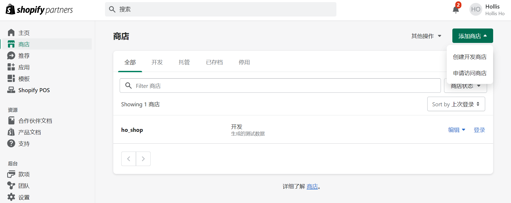
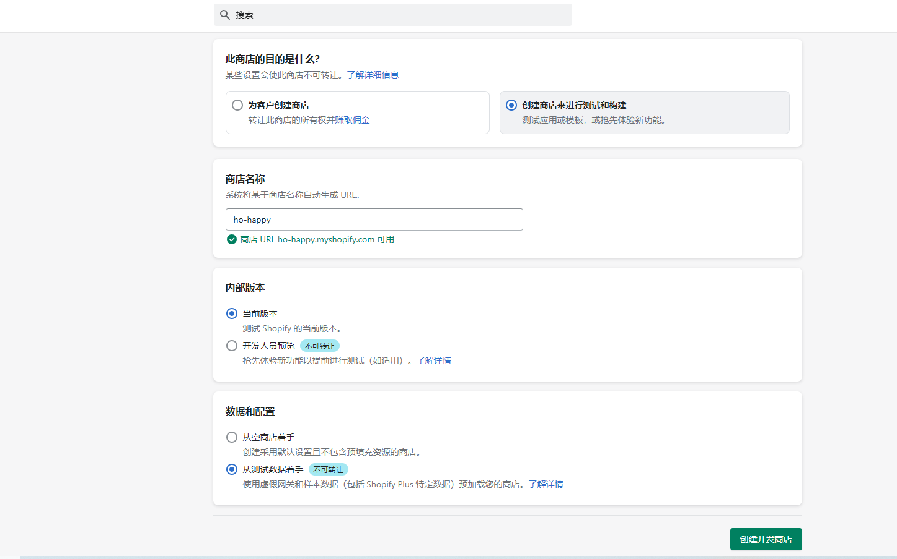
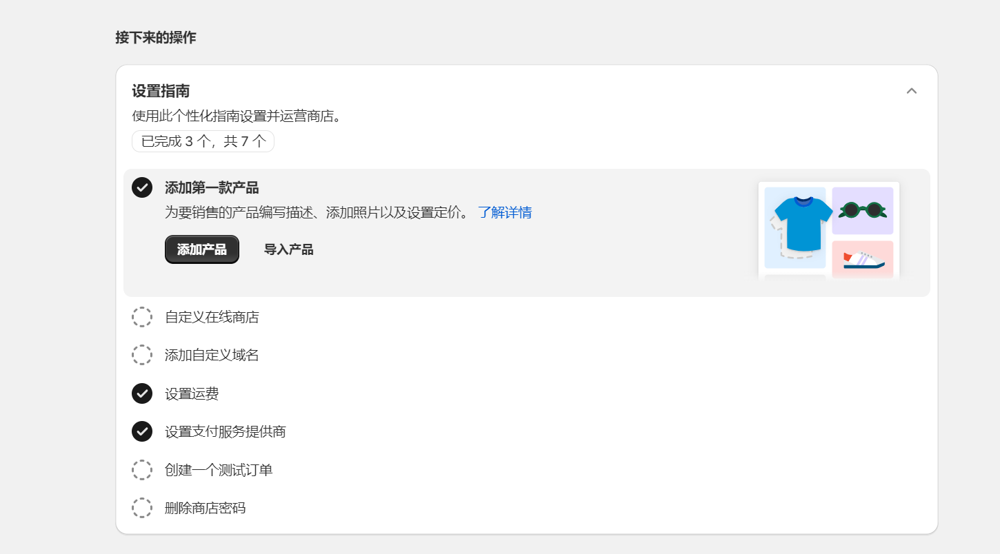

Shopify App开发知识整理
修订记录
| 日期 | 版本 | 说明 | 作者 |
|---|---|---|---|
| 2024-07-08 | v1.0.0 | Hollis |
前期准备
相关网址
Shopify官网（https://www.shopify.com/）
Shopify开发文档（https://shopify.dev/）
Shopify合作伙伴（https://www.shopify.com/partners）
相关概念
-
Partner （合作伙伴）
- Shopify 开发者账号，用于开发App、Theme、Extension等
-
App （应用）
- 扩展店铺的功能，可以发布到应用市场
-
Theme (主题)
- 设计店铺的样式，可以发布到主题市场
-
Custom storefront （自定义店铺）
商店
  在合作伙伴后台添加开发商城，跟着设置指南完成商店设置
Shopify Cli
本地开发环境
- 安装 Node.js 20.15+
- 安装Node.js包管理器 npm、Yarn 或 pnpm
- 安装 Ruby 2.7+
- 安装 Git 2.44+
安装Shopify Cli
|
|
具体安装依赖参考官方文档：https://shopify.dev/docs/api/shopify-cli
应用
商店后台应用
您可以构建一个应用程序来为 Shopify 商店添加功能并扩展商家体验，或者为客户创造独特的购买体验。您还可以将 Shopify 商店数据提取到您的应用程序、平台或集成中。
为了根据他们的特定需求定制体验，商家使用 Shopify 应用来帮助建立他们的业务，与外部服务集成，并向他们的 Shopify 后台添加功能。 官方文档：https://shopify.dev/docs/apps/build/scaffold-app
- 创建新应用
|
|
- 本地运行应用
|
|
- 通过控制台输出的Preview URL，查看App
商店前台应用
商店前台应用也叫：主题应用扩展Extension（应用程序块、应用程序嵌入块）
主题应用程序扩展为您的应用程序提供了两种扩展在线商店主题的集成类型：应用程序块和应用程序嵌入块。您提交到 Shopify 应用商店的每个新应用都需要使用主题应用扩展来与在线商店主题集成。
主题应用程序扩展允许商家轻松地将动态元素添加到他们的主题中，而无需与 Liquid 模板或代码进行交互。例如，动态元素可以包括产品评论、价格、评级或产品的交互式 3D 模型。
优点
- 主题应用程序扩展会自动在主题编辑器中公开您的应用程序。您可以利用编辑器的可视化编辑功能，而无需在您的应用程序中复制它们。
- 您可以同时将您的应用程序部署到使用它的所有在线商店。您还可以访问Shopify CDN 上的应用程序版本控制和资产托管的生命周期管理。
- 一组集成逻辑和指令适用于所有主题。
- 商家不需要手动编辑他们的主题代码。
该部分功能还未深入研究，构建步骤略。详情参考官方文档：https://shopify.dev/docs/apps/build/online-store
主题
- 创建主题
|
|
- 运行主题
|
|
运行成功之后，通过http://127.0.0.1:9292/访问主题
Admin API
App需要获取shopify的信息如产品、订单、客户信息等，需要通过Admin API获取。
还有App的授权和鉴权都是通过Admin API方式。
Admin API分为GraphQL Admin API、REST Admin API。
GraphQL Admin API官方文档：https://shopify.dev/docs/api/admin-graphql
REST Admin API官方文档：https://shopify.dev/docs/api/admin-rest
特别说明：本报告中案例采用REST Admin API方式
App授权和鉴权
Shopify中有两种Token，分别是Session Token会话令牌和Access Token访问令牌。
会话令牌用于身份验证，不能替代授权。详细了解身份验证和授权之间的区别。
与 API 访问令牌不同，会话令牌不能用于向 Shopify API 发出经过身份验证的请求。API 访问令牌可用于从应用的后端向 Shopify 发送请求，以便从用户的商店中获取特定数据。
例如，要向GraphQL Admin API发出经过身份验证的请求，您的应用必须存储其在 OAuth 流程中收到的访问令牌。相比之下，会话令牌由您的应用的后端用来验证来自您的应用前端的嵌入式请求。
下图显示了使用会话令牌和 API 访问令牌的身份验证过程：

官方文档：https://shopify.dev/docs/apps/build/authentication-authorization/session-tokens
总结：Session Token是App 前端和后端交互的凭证；Access Token是App 后端和Shopify交互的凭证。
OAuth授权
流程图

Access Token
Shopify 的 Access Token 分为两种类型：在线 和 离线
- Online Access Token
使用在线访问模式创建的访问令牌是临时的，并且一定会在一段时间后过期。访问令牌过期后，Shopify 会返回401 Unauthorized响应代码。
用户可以随时撤销对您应用的访问权限，而不会影响其他用户访问令牌的有效性。当用户退出 Shopify 管理平台时，在同一网络会话期间创建的所有在线模式访问令牌都将被撤销。
- Offline Access Token
使用离线访问模式创建的访问令牌是永久性的。仅当从商店卸载应用程序时，它们才会被撤销。
多次授权应用进行离线访问时，每次都会返回相同的访问令牌。获得商店的离线访问权限后，只有在卸载应用或需要其他访问范围时才需要重新授权应用。